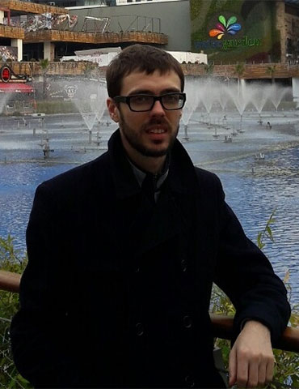

Сахно Андрей
| День рождения: | 11.07.1986 |
| Город: | Киев |
| Телефон: | (050) 449-00-49 |
| Email: | andreysakhno1986@gmail.com |
| Skype: | andreysakhno |
| Навыки | |
| WEB-development: | PHP, Yii2 framework, MySQL, JavaScript, JQuery, HTML, CSS, Bootstrap |
| Языки: | Украинский и русский (родные), английский (pre-intermediate) |
| Личные качества: | Ответственность, высокая работоспособность, умение работать в команде, дисциплинированность |
| Опыт работы | |
| 2015 – … |
Директор ООО «Велесгард» (производство антикоррозионных покрытий) Обязанности:
|
| 2012 − 2013 |
Технический директор, руководитель проектов ООО «Велесгард» Обязанности:
|
| 2009 − 2012 |
Руководитель проектов ООО «Турсхольм» (инжиниринг, дистрибьютор защитных покрытий Stirling Lloyd, 3M) Обязанности:
|
| Образование | |
| 2009 − 2010 |
«Криворожский национальный университет» – Аспирант «Моделирования напряжённо-деформационного состояния конструкций подземных сооружений» (Delphi, OpenGL, метод конечных элементов) |
| 2003 − 2009 | НТУУ «Киевский политехнический институт» – Программное обеспечение автоматизированных систем – Магистр |
